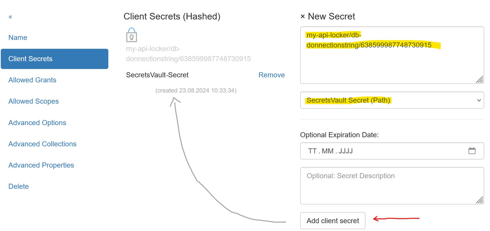
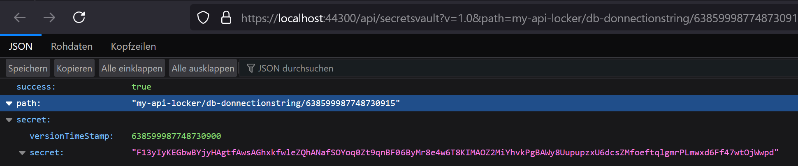

Secrets¶
Um Access Tokens zu erhalten, muss/soll ein Client eine Client Id und ein Client Secret übergeben (Client Id und Client Secret entspricht in etwa User und Passwort).
Hier werden die unterschiedlichen Arten von Secrets aufgezeigt.
Kein Secret verwenden¶
Es können Clients eingerichtet werden, die kein Secret voraussetzen. Bei Clients
gibt es unter dem Menüpunkt Advanced Options folgende Option:
Ist die Option RequireClientSecret nicht gesetzt, muss ein Client kein Secret übergeben.
Bemerkung
Diese Option nicht zu setzten, sollte nur bei Web Anwendungen erfolgen. Hier werden
unter dem Menüpunkt Advanced Collections noch Redirect Urls angegeben werden:
Da der Anmelde-Prozess bei OpenId Connect nur möglich ist, wenn auf eine dieser Urls weitergeleitet werden kann, ist eine Web Application Client damit eigentlich schon abgesichert.
Bemerkung
API Clients sollten niemals ohne Secret eine AccessToken abholen können!
Shared Secrets¶
Die einfachste Art von Secrets sind Shared Secrets. Dabei handelt es sich im
Passwörter (Text):
Bemerkung
Es können mehrere Secrets für einen Client angegeben werden. Ein Client muss genau ein passendes Secret aus den hier angeführten übergeben.
Bemerkung
Secrets können ein Ablaufdatum haben (
optional: Expire Date). Das kann hilfreich sein wenn man einem Client nur für eine beschränkte Zeit Zugriff auf eine API haben sollte.
Zu erstellen von sicheren Secrets kann der Random Secret Generator verwendet werden,
der auf der Seite angeboten wird:

Ein so erzeugtes Passwort, kann aus dem Textfeld kopiert und in der Eingabemaske für ein
Shared Secret eingefügt werden.
X509 Certificate¶
Clients können auch über Zertifikate abgesichert werden. Dazu können die vorherigen Abschnitt beschriebenen selbst-signierten Zertifikate verwendet werden.
Zu Absichern des Clients über ein Zertifikat sind folgende Files notwendig:
PFX Datei: Beinhalte öffentlich und privaten Schlüssel und kann optional mit einem Passwort geschützt sein. Dieses Zertifikat verwendet der Client um einen AccessToken abzuholen.
CRT Datei: Öffentlich Schlüssel (Text Format). Dieses Zertifikat wird am IdentityServerNET als Secret hinterlegt.

Das CRT-File muss mit einem Text Editor geöffnet werden und der Inhalt in die Eingabemaske
kopiert werden. Als Typ für das Secret muss X509 Certificate (.crt) eingestellt werden.
Zugriff vom Client¶
Ein Client muss zuerst das Zertifikat auslesen:
var cert = new X509Certificate2(@"my-api-client-secret.pfx", "password");
Dieses Zertifikat kann dann an unterschiedliche Methoden aus dem nuget Paket
IdentityServerNET.Clients anstelle es Shared Secrets übergeben werden.
var tokenClient = new IdentityServerNET.Clients.TokenClient("my-api-commands", cert);
await tokenClient.GetAccessToken("https://localhost:44300", []);
var accessToken = tokenClient.AccessToken;
Secrets Vault¶
Im Secrets Vault (siehe vorheriger Abschnitt), können Secrets zentral gespeichert werden. Die Secrets kann ein berechtigter Client über die Secret Value API abholen.
Damit die Secrets nicht an mehreren Stellen gepflegt werden müssen, können Secrets für Clients auf direkt auf das Secrets Vault verweisen. Ändert man ein Secret im Secrets Vault muss es noch einmal im bei den Secrets für den Client verändert werden.
Anstelle des eigentlich Secrets wird der Pfad des Secrets im Secrets Vault eingetragen:
Um den Pfad für ein Secret herauszufinden, wechselt man als Administrator ins Secrets Vault und klickt auf die entsprechende Version eines Secrets. Im Browser wird ein JSON angezeigt, in dem auch der korrekte Pfad für das Secret aufgezeigt wird:
Bemerkung
Als Pfad kann eine bestimmte Version, oder die letzte erstelle Version des Secrets herangezogen
werden. Dafür muss im Pfad einfach die Version weggelassen werden, zb:
my-api-locker/db-donnectionstring
Zugriff von Client¶
Der Zugriff auf das Secrets Vault wurde schon im Kapitel Secrets Vault beschrieben. Hier noch einmal das Beispiel mit der Annahme, dass der API Client für die Secrets Vault API mit eine Zertifikat abgesichert wurde.
Ein Client muss zuerst das Zertifikat auslesen:
var cert = new X509Certificate2(@"my-api-client-secret.pfx", "password");
Dieses Zertifikat kann dann an unterschiedliche Methoden aus dem nuget Paket
IdentityServerNET.Clients anstelle es Shared Secrets übergeben werden.
var secretsVaultClient = new IdentityServerNET.Clients.SecretsVaultClient("my-api-secrets", cert);
await secretsVaultClient.OpenLocker("https://localhost:44300", "my-api-locker");
var secretResponse = await secretsVaultClient.GetSecret("db-connectionstring");
Console.WriteLine(secretResponse.GetValue())
Auf diese Weise kann eine Client Anwendung geschrieben werden, bei der in der Konfiguration keine Sensiblen Daten gespeichert werden müssen. Alle Secrets werden im Secrets Vault gespeichert. Das einzige Geheimnis das für den Client noch notwendig ist, ist das optionale Passwort für das Zertifikat (Kann theoretisch hard coded implementiert werden).
Das Zertifikat kann regelmäßig ausgetauscht werden, dazu sind dann mehrere Schritte notwendig:
Neues Zertifikat erstellen (eventuell mit dem gleichen Passwort)
Für Secrets Vault Client den Inhalt des neuen CRT-File eintragen
Für die Client Anwendung das neue PFX-File aktualisieren